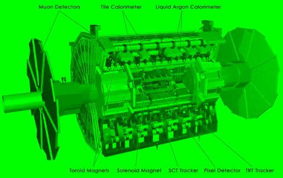
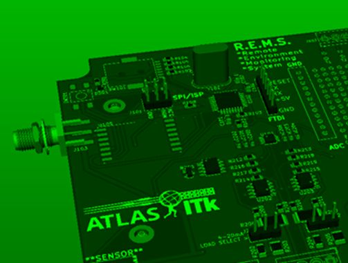
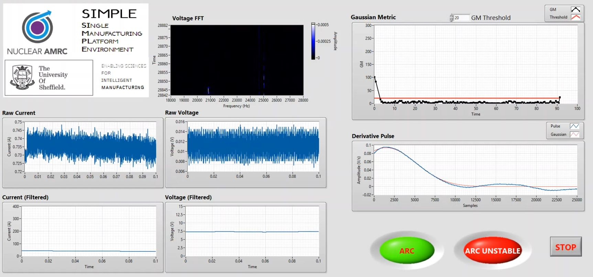

Projects
ELSA Cryogenic Facility
ELSA is a cryogenic test system for investigating superconductors and their jointing technologies, involving the application of large electric currents and magnetic fields at cryogenic temperatures down to 20 Kelvin (-253 degrees Celsius). I was responsible for delivery of the site acceptance test (SAT) of the control and instrumentation (C&I) system at UKAEA South Yorkshire (formerly Fusion Technology Facility - FTF).

ATLAS ITk Upgrade
Department of Physics & Astronomy, The University of Sheffield

Supporting the ATLAS ITk (the particle physics experiment that discovered the Higgs boson) upgrade programme at CERN (Conseil Européen pour la Recherche Nucléaire). My time was split between cleanroom work (wire bonding, optical microscopy and electronic module construction), precision TIG welding of narrow gauge titanium tube for the ATLAS cooling system, and general instrumentation including electronic design; schematic capture and PCB layout; microcontroller firmware and other ad hoc software development in multiple languages.

As a side project, I designed a Remote Environment Monitoring System (REMS) for cleanroom condition monitoring utilising a wireless sensor network at 868 MHz. Firmware programming in C++.
Smart Enabling Robotics driving free FOrm Welding (SERFOW)
I developed the LabVIEW cRIO based orchestration of this automated robotic orbital welding demonstrator aimed at the automotive sector.
Water Turbidity Measurement Instrument
As part of my PhD in Physical Geography, I designed and built a scientific instrument for the measurement of water turbidity, detailed in a journal article: https://doi.org/10.1016/j.ohx.2019.e00052

Turbine Blade Remanufacturing System
A systems-integration exercise to showcase an automated TIG welding additive manufacturing demonstrator. I developed a LabVIEW cRIO system to orchestrate several incompatible control, robotic, and scanning systems into a functional demo for an Innovate UK project.
Single Manufacturing Platform Environment (SIMPLE)

This project in collaboration with Nuclear AMRC involved the monitoring of TIG arc voltage properties in real-time during a robotically automated welding process. I developed a measurement system that was capable of statistically categorising a number of different process faults thus allowing the welding process to terminate safely in a timely manner. The measurement system was based on a National Instruments PXI platform programmed in LabVIEW with DAQmx.
Thermal Energy Harvesting Power Management System
Design, production and testing of an SMT power management system for thermal energy harvesting onboard marine vehicles, and the subsequent evaluation and environmental testing of the packaged thermo-electric generator (TEG) system. Firmware programming in C++.

Pulsed Detonation Engine Shockwave Instrumentation
Built an FPGA-based system using National Instruments products programmed in LabVIEW to measure shockwaves generated by a Pulsed Detonation Engine, with a time resolution of 5 nanoseconds.